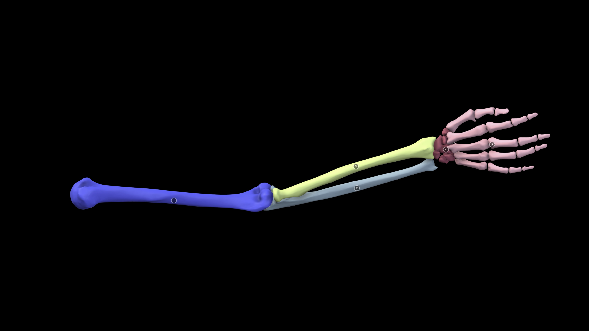

<!DOCTYPE html>
<html lang="ja">
<head>
    <meta charset="UTF-8">
    <meta name="viewport" content="width=device-width, initial-scale=1.0">
    <title>Bio-Edu Forelimb Evolution Reference</title>
    <!-- Tailwind CSS -->
    <script src="https://cdn.tailwindcss.com"></script>
    <!-- React & ReactDOM -->
    <script crossorigin src="https://unpkg.com/react@18/umd/react.production.min.js"></script>
    <script crossorigin src="https://unpkg.com/react-dom@18/umd/react-dom.production.min.js"></script>
    <!-- Babel -->
    <script src="https://unpkg.com/@babel/standalone/babel.min.js"></script>
    <!-- Lucide Icons -->
    <script src="https://unpkg.com/lucide@latest"></script>
    <style>
        @import url('https://fonts.googleapis.com/css2?family=Noto+Sans+JP:wght@400;500;700;900&display=swap');
        @import url('https://fonts.googleapis.com/css2?family=Fira+Code:wght@500;700&display=swap');
        
        body { font-family: 'Noto Sans JP', sans-serif; background-color: #f8fafc; }
        .font-mono-code { font-family: 'Fira Code', monospace; }
        
        /* 🔥 A4用紙（縦）の完璧な印刷設定 */
        @media print {
            body, html { 
                background-color: white !important; 
                margin: 0 !important; 
                padding: 0 !important; 
                width: 210mm !important; 
                height: 297mm !important; 
                -webkit-print-color-adjust: exact !important; 
                print-color-adjust: exact !important; 
            }
            .no-print { display: none !important; }
            
            @page { size: A4 portrait; margin: 0; }
            
            .print-wrapper { 
                display: block !important; 
                width: 210mm !important;
                margin: 0 auto !important;
                padding: 0 !important;
            }
            
            .print-container { 
                width: 210mm !important; 
                height: 297mm !important; 
                box-sizing: border-box !important;
                box-shadow: none !important;
                margin: 0 !important; 
                padding: 0 !important;
                border: none !important;
                page-break-after: always !important;
                page-break-inside: avoid !important;
                overflow: hidden !important;
                transform: none !important;
            }
        }

        @media screen {
            .print-wrapper {
                display: flex;
                flex-direction: column;
                align-items: center;
                gap: 2rem;
                padding: 2rem 0;
            }
            .print-container {
                width: 210mm;
                height: 297mm;
                background-color: white;
                box-shadow: 0 10px 25px rgba(0,0,0,0.15);
                border-radius: 4px;
                overflow: hidden;
                position: relative;
            }
        }
    </style>
</head>
<body>
    <div id="root"></div>

    <script type="text/babel">
        function App() {
            // コレクション全体のURL
            const sketchfabURL = "https://skfb.ly/pNytP"; 
            const bioEduURL = "https://katsumasashibata.github.io/Bio-Edu-Suite/index.html";

            return (
                <div className="min-h-screen bg-slate-50 print-wrapper flex flex-col items-center pb-10">
                    
                    {/* 🖨️ 画面用コントロール */}
                    <div className="no-print w-full bg-white p-4 shadow-sm flex flex-col justify-center items-center sticky top-0 z-50 border-b border-slate-200">
                        <button 
                            onClick={() => window.print()}
                            className="bg-gradient-to-r from-amber-500 to-orange-600 hover:from-amber-400 hover:to-orange-500 text-white font-bold py-3 px-8 rounded-full shadow-lg shadow-amber-500/20 flex items-center gap-2 transition-all transform hover:scale-105"
                        >
                            <i data-lucide="printer" className="w-5 h-5"></i>
                            A4サイズで印刷する
                        </button>
                    </div>

                    {/* 📄 チラシキャンバス（A4サイズ固定） */}
                    <div className="py-6 print-wrapper w-full flex md:justify-center">
                        <div className="print-container w-[210mm] h-[297mm] bg-white shadow-xl rounded-sm relative flex flex-col box-border border border-slate-200/80">
                            
                            {/* 🟧 ヘッダーセクション */}
                            <header className="bg-slate-900 text-white p-5 relative shadow-md overflow-hidden shrink-0 border-b-4 border-amber-500">
                                <div className="absolute top-0 right-0 w-64 h-64 bg-amber-500 rounded-full mix-blend-screen filter blur-3xl opacity-20 -translate-y-1/2 translate-x-1/3"></div>
                                <div className="absolute bottom-0 left-0 w-48 h-48 bg-orange-500 rounded-full mix-blend-screen filter blur-3xl opacity-20 translate-y-1/2 -translate-x-1/4"></div>
                                
                                <div className="relative z-10 flex justify-between items-end">
                                    <div>
                                        <div className="flex items-center gap-1.5 mb-1.5">
                                            <i data-lucide="bone" className="w-5 h-5 text-amber-400"></i>
                                            <span className="text-amber-300 font-bold tracking-widest text-[10px] border border-amber-400/30 px-2 py-0.5 rounded bg-amber-900/40">EVOLUTION & MORPHOLOGY LAB</span>
                                        </div>
                                        <h1 className="text-3xl leading-none font-black tracking-tighter mb-2 text-transparent bg-clip-text bg-gradient-to-r from-white via-amber-100 to-orange-200">
                                            前肢骨格 計測リファレンス
                                        </h1>
                                        <p className="text-slate-300 text-[13px] font-medium tracking-wide">
                                            Sketchfabの3Dモデルカラーコードと完全連動。同じ色の骨を探して計測しよう！
                                        </p>
                                    </div>
                                    <div className="text-right">
                                        <p className="text-[10px] text-amber-300 font-mono-code tracking-widest bg-slate-800/80 px-2.5 py-1 rounded border border-amber-500/30">FOR LAB WORK</p>
                                    </div>
                                </div>
                            </header>

                            {/* ⬜ メインコンテンツ */}
                            <div className="flex-1 px-6 pt-5 pb-0 flex flex-col bg-slate-50 relative z-10 min-h-0">
                                
                                {/* 🔴 1. 3Dモデル連動：カラー凡例と計測部位 */}
                                <section className="shrink-0 flex flex-col min-h-0 mb-4 bg-white p-4 rounded-xl border border-slate-200 shadow-sm">
                                    <div className="flex items-center gap-2 mb-3 border-b-2 border-slate-100 pb-2">
                                        <div className="w-6 h-6 bg-amber-100 text-amber-600 rounded-full flex items-center justify-center font-black text-sm">1</div>
                                        <h2 className="text-[16px] font-bold text-slate-800 tracking-tight">どこを測る？ 3Dモデルのカラーコードと計測部位</h2>
                                    </div>
                                    <p className="text-[11px] text-slate-600 mb-3 font-medium leading-relaxed">
                                        動物の前肢は環境に合わせて進化しましたが、基本構造は同じです。<br/>
                                        Sketchfabの3Dモデルは部位ごとに<span className="font-bold text-slate-800">世界共通の色分け</span>がされています。色を手がかりに骨を特定しましょう。
                                    </p>

                                    <div className="flex gap-4 mb-4">
                                        {/* 左側：Sketchfab凡例 */}
                                        <div className="w-1/3 bg-white rounded-lg p-3.5 flex flex-col gap-2 justify-center border border-slate-300 shadow-sm">
                                            <div className="text-[10px] text-slate-500 font-bold mb-0.5 border-b border-slate-200 pb-1">■ 3Dモデルの配色 (Legend)</div>
                                            <div className="flex items-center gap-2">
                                                <div className="w-4 h-4 rounded bg-[#3b82f6] shrink-0 border border-slate-200"></div>
                                                <span className="text-slate-800 font-mono-code text-[10.5px] tracking-wide">Humerus <span className="text-slate-500 text-[9px] font-sans font-bold">(上腕骨)</span></span>
                                            </div>
                                            <div className="flex items-center gap-2">
                                                <div className="w-4 h-4 rounded bg-[#bef264] shrink-0 border border-slate-200"></div>
                                                <span className="text-slate-800 font-mono-code text-[10.5px] tracking-wide">Radius <span className="text-slate-500 text-[9px] font-sans font-bold">(橈骨)</span></span>
                                            </div>
                                            <div className="flex items-center gap-2">
                                                <div className="w-4 h-4 rounded bg-[#93c5fd] shrink-0 border border-slate-200"></div>
                                                <span className="text-slate-800 font-mono-code text-[10.5px] tracking-wide">Ulna <span className="text-slate-500 text-[9px] font-sans font-bold">(尺骨)</span></span>
                                            </div>
                                            <div className="flex items-center gap-2">
                                                <div className="w-4 h-4 rounded bg-[#fb7185] shrink-0 border border-slate-200"></div>
                                                <span className="text-slate-800 font-mono-code text-[10.5px] tracking-wide">Carpals <span className="text-slate-500 text-[9px] font-sans font-bold">(手根骨)</span></span>
                                            </div>
                                            <div className="flex items-start gap-2">
                                                <div className="w-4 h-4 rounded bg-[#fbcfe8] shrink-0 border border-slate-200 mt-0.5"></div>
                                                <span className="text-slate-800 font-mono-code text-[10.5px] tracking-wide leading-tight">Digits: <span className="text-slate-500 text-[9px] font-sans font-bold">(指)</span><br/><span className="text-[9.5px]">metacarpals & phalanges</span><br/><span className="text-slate-500 text-[9px] font-sans font-bold">(中手骨と指骨)</span></span>
                                            </div>
                                        </div>

                                        {/* 右側：人間の腕モデル（精密位置合わせSVGオーバーレイ版） */}
                                        <div className="w-2/3 bg-black rounded-lg border border-slate-700 relative overflow-hidden shadow-inner flex items-center justify-center">
                                            
                                            {/* 背景画像（arm.jpg） */}
                                            
                                            
                                            {/* 画像のピクセル座標（1024x576）と1ミリもズレずに重なる精密オーバーレイ */}
                                            <svg 
                                                viewBox="0 0 1024 576" 
                                                className="absolute inset-0 w-full h-full pointer-events-none"
                                            >
                                                <defs>
                                                    <marker id="arr-blue" viewBox="0 0 10 10" refX="5" refY="5" markerWidth="6" markerHeight="6" orient="auto-start-reverse">
                                                        <path d="M 0 0 L 10 5 L 0 10 z" fill="#38bdf8" />
                                                    </marker>
                                                    <marker id="arr-green" viewBox="0 0 10 10" refX="5" refY="5" markerWidth="6" markerHeight="6" orient="auto-start-reverse">
                                                        <path d="M 0 0 L 10 5 L 0 10 z" fill="#34d399" />
                                                    </marker>
                                                    <marker id="arr-red" viewBox="0 0 10 10" refX="5" refY="5" markerWidth="6" markerHeight="6" orient="auto-start-reverse">
                                                        <path d="M 0 0 L 10 5 L 0 10 z" fill="#f43f5e" />
                                                    </marker>
                                                </defs>

                                                {/* 関節の縦ガイドライン（破線） */}
                                                {/* 肘関節 (x = 472) */}
                                                <line x1="472" y1="40" x2="472" y2="400" stroke="#64748b" strokeWidth="2" strokeDasharray="6 6" />
                                                {/* 手首関節 (x = 758) */}
                                                <line x1="758" y1="40" x2="758" y2="350" stroke="#64748b" strokeWidth="2" strokeDasharray="6 6" />
                                                {/* 手根と中手骨の境界 (x = 780) */}
                                                <line x1="780" y1="40" x2="780" y2="330" stroke="#fb7185" strokeWidth="1.5" strokeDasharray="4 4" opacity="0.8" />
                                                {/* 指の付け根 (中手骨と指骨の境界 x = 848) */}
                                                <line x1="848" y1="110" x2="848" y2="320" stroke="#f472b6" strokeWidth="1.5" strokeDasharray="4 4" opacity="0.8" />

                                                {/* 1段目：骨の部位名ラベル */}
                                                <text x="297" y="70" textAnchor="middle" fill="#94a3b8" fontWeight="bold" fontSize="24">上腕</text>
                                                <text x="615" y="70" textAnchor="middle" fill="#7dd3fc" fontWeight="bold" fontSize="24">前腕</text>
                                                <text x="769" y="38" textAnchor="middle" fill="#fb7185" fontWeight="bold" fontSize="16">手根</text>
                                                <text x="867" y="70" textAnchor="middle" fill="#fbcfe8" fontWeight="bold" fontSize="24">指 (中手骨＋指骨)</text>

                                                {/* 2段目：計測範囲の矢印とラベル */}
                                                {/* ① 前腕の計測範囲 (472 〜 758) */}
                                                <line x1="478" y1="125" x2="752" y2="125" stroke="#38bdf8" strokeWidth="3" markerStart="url(#arr-blue)" markerEnd="url(#arr-blue)" />
                                                <rect x="545" y="108" width="140" height="34" rx="6" fill="#0f172a" stroke="#38bdf8" strokeWidth="1.5" />
                                                <text x="615" y="131" textAnchor="middle" fill="#38bdf8" fontWeight="bold" fontSize="18">① 前腕の長さ</text>

                                                {/* ② 手根・中手骨の計測範囲 (758 〜 848) */}
                                                <line x1="762" y1="125" x2="844" y2="125" stroke="#34d399" strokeWidth="2.5" markerStart="url(#arr-green)" markerEnd="url(#arr-green)" />
                                                <rect x="748" y="145" width="110" height="28" rx="5" fill="#0f172a" stroke="#34d399" strokeWidth="1.5" />
                                                <text x="803" y="164" textAnchor="middle" fill="#34d399" fontWeight="bold" fontSize="14">② 手根+中手骨</text>

                                                {/* ③ 指骨の計測範囲 (848 〜 955) */}
                                                <line x1="852" y1="125" x2="950" y2="125" stroke="#f43f5e" strokeWidth="3" markerStart="url(#arr-red)" markerEnd="url(#arr-red)" />
                                                <rect x="856" y="108" width="90" height="34" rx="6" fill="#0f172a" stroke="#f43f5e" strokeWidth="1.5" />
                                                <text x="901" y="131" textAnchor="middle" fill="#f43f5e" fontWeight="bold" fontSize="18">③ 指骨</text>
                                            </svg>
                                        </div>
                                    </div>

                                    {/* 3つの計測部位の解説 */}
                                    <div className="grid grid-cols-3 gap-3">
                                        <div className="border border-slate-300 bg-slate-50 p-2.5 rounded-lg shadow-sm">
                                            <h3 className="font-bold text-slate-800 text-[12px] mb-1.5 flex items-center gap-1.5">
                                                <span className="w-4 h-4 bg-slate-800 text-white rounded-full flex items-center justify-center text-[10px]">①</span> 
                                                前腕の長さ
                                            </h3>
                                            <p className="text-[10px] text-slate-700 leading-snug">
                                                画面上の <span className="font-bold bg-[#bef264] px-1 rounded text-slate-800 border border-slate-300">黄緑 (Radius)</span> または <span className="font-bold bg-[#93c5fd] px-1 rounded text-slate-800 border border-slate-300">水色 (Ulna)</span> の長さを測ります。<br/>※2本ある場合は長い方を採用。
                                            </p>
                                        </div>
                                        <div className="border border-slate-300 bg-slate-50 p-2.5 rounded-lg shadow-sm">
                                            <h3 className="font-bold text-slate-800 text-[12px] mb-1.5 flex items-center gap-1.5">
                                                <span className="w-4 h-4 bg-slate-800 text-white rounded-full flex items-center justify-center text-[10px]">②</span> 
                                                手根・中手骨の長さ
                                            </h3>
                                            <p className="text-[10px] text-slate-700 leading-snug">
                                                <span className="font-bold bg-[#fb7185] text-white px-1 rounded border border-slate-300">濃いピンク (Carpals)</span> から、<span className="font-bold bg-[#fbcfe8] px-1 rounded text-slate-800 border border-slate-300">薄いピンク (Digits)</span> の根元（手の甲にあたる部分）までを測ります。
                                            </p>
                                        </div>
                                        <div className="border border-slate-300 bg-slate-50 p-2.5 rounded-lg shadow-sm">
                                            <h3 className="font-bold text-slate-800 text-[12px] mb-1.5 flex items-center gap-1.5">
                                                <span className="w-4 h-4 bg-slate-800 text-white rounded-full flex items-center justify-center text-[10px]">③</span> 
                                                指骨の長さ
                                            </h3>
                                            <p className="text-[10px] text-slate-700 leading-snug">
                                                <span className="font-bold bg-[#fbcfe8] px-1 rounded text-slate-800 border border-slate-300">薄いピンク (Digits)</span> のうち、指の関節から先端まで。進化的に最も長く発達した1本の指を測ります。
                                            </p>
                                        </div>
                                    </div>
                                </section>

                                {/* 🔵 2. 実験の進め方と対象生物リスト */}
                                <section className="shrink-0 flex flex-col min-h-0">
                                    <div className="flex items-center gap-2 mb-3 border-b-2 border-slate-200 pb-2">
                                        <div className="w-6 h-6 bg-amber-100 text-amber-600 rounded-full flex items-center justify-center font-black text-sm">2</div>
                                        <h2 className="text-[16px] font-bold text-slate-800 tracking-tight">デジタル・ラボの手順 ＆ 比較対象リスト</h2>
                                    </div>

                                    <div className="grid grid-cols-2 gap-5 h-full mb-3">
                                        {/* STEP 1: 3Dモデル検索 */}
                                        <div className="bg-white p-3 rounded-xl border border-slate-200 shadow-sm flex flex-col justify-between relative overflow-hidden">
                                            <div className="absolute top-0 right-0 bg-rose-100 text-rose-700 text-[9px] font-bold px-2 py-0.5 rounded-bl-lg">重要ポイント！</div>
                                            <div>
                                                <div className="flex items-center gap-2 mb-2">
                                                    <i data-lucide="camera" className="w-4 h-4 text-indigo-500"></i>
                                                    <h3 className="font-black text-[12px] text-indigo-900">STEP 1: 3Dモデルの計測</h3>
                                                </div>
                                                <p className="text-[9px] text-slate-600 mb-1 leading-relaxed">
                                                    右のQRから3Dモデルを開き「真横」に向けます。<span className="font-bold text-rose-600 border-b border-rose-200">必ずスクリーンショットを撮ってから</span>、写真アプリ上で①②③の長さを測りましょう。
                                                    <br/><span className="text-[8px] text-slate-400">※測る途中で拡大縮小すると、比率が狂ってしまうためです！</span>
                                                </p>
                                            </div>
                                            <div className="flex justify-center items-center mt-1 p-1.5 bg-indigo-50/50 rounded-lg border border-indigo-100">
                                                
                                                <div className="ml-3 text-[9px] font-bold text-indigo-700 leading-snug">
                                                    ◀ コレクションURL<br/>スマホでスキャンして<br/>3Dモデルへアクセス！
                                                </div>
                                            </div>
                                        </div>

                                        {/* STEP 2: 解析ツール */}
                                        <div className="bg-white p-3 rounded-xl border border-slate-200 shadow-sm flex flex-col justify-between">
                                            <div>
                                                <div className="flex items-center gap-2 mb-2">
                                                    <i data-lucide="bar-chart-2" className="w-4 h-4 text-emerald-500"></i>
                                                    <h3 className="font-black text-[12px] text-emerald-900">STEP 2: 系統樹の作成</h3>
                                                </div>
                                                <p className="text-[9px] text-slate-600 mb-2 leading-relaxed">
                                                    ワークシートで計算された「CSVデータ」をコピーし、右のQRコードからBio-Edu Suiteの<span className="font-bold text-emerald-700">「Investigation Dashboard」</span>へ貼り付けて解析を実行します。
                                                </p>
                                            </div>
                                            <div className="flex justify-center items-center mt-1 p-1.5 bg-emerald-50/50 rounded-lg border border-emerald-100">
                                                
                                                <div className="ml-3 text-[9px] font-bold text-emerald-700 leading-snug">
                                                    ◀ ダッシュボードURL<br/>スマホでスキャンして<br/>解析ツールへアクセス！
                                                </div>
                                            </div>
                                        </div>
                                    </div>
                                    
                                    {/* 比較対象生物リスト（全7種・学名英名入り） */}
                                    <div className="bg-white p-3 rounded-xl border border-slate-200 shadow-sm">
                                        <h3 className="font-bold text-slate-800 text-[11px] mb-2 border-b border-slate-100 pb-1 flex justify-between items-end">
                                            <span>■ 比較対象の生物リスト（全7種）</span>
                                            <span className="text-[9px] text-slate-500 font-normal">※Sketchfabでのモデル検索用</span>
                                        </h3>
                                        <div className="grid grid-cols-4 gap-2">
                                            {/* ニワトリ */}
                                            <div className="bg-amber-50 border border-amber-200 p-1.5 rounded text-center col-span-2 flex flex-col justify-center">
                                                <div className="text-[12px] font-bold text-amber-800 leading-tight">ニワトリ <span className="text-[9px] font-normal">(実験標本)</span></div>
                                                <div className="text-[10px] text-amber-700/90 font-bold mt-1">Chicken</div>
                                                <div className="text-[8px] text-amber-700/70 font-mono-code italic">Gallus gallus</div>
                                            </div>
                                            {/* カモメ */}
                                            <div className="bg-slate-50 border border-slate-200 p-1.5 rounded text-center flex flex-col justify-center">
                                                <div className="text-[11px] font-bold text-slate-800 leading-tight">カモメ</div>
                                                <div className="text-[9px] text-slate-600 font-bold mt-0.5">Common Gull</div>
                                                <div className="text-[8px] text-slate-500 font-mono-code italic">Larus canus</div>
                                            </div>
                                            {/* コウモリ */}
                                            <div className="bg-slate-50 border border-slate-200 p-1.5 rounded text-center flex flex-col justify-center">
                                                <div className="text-[11px] font-bold text-slate-800 leading-tight">コウモリ</div>
                                                <div className="text-[9px] text-slate-600 font-bold mt-0.5">Vampire Bat</div>
                                                <div className="text-[8px] text-slate-500 font-mono-code italic">Desmodus rotundus</div>
                                            </div>
                                            {/* ザトウクジラ */}
                                            <div className="bg-slate-50 border border-slate-200 p-1.5 rounded text-center flex flex-col justify-center">
                                                <div className="text-[11px] font-bold text-slate-800 leading-tight">ザトウクジラ</div>
                                                <div className="text-[9px] text-slate-600 font-bold mt-0.5">Humpback Whale</div>
                                                <div className="text-[7.5px] text-slate-500 font-mono-code italic leading-none">Megaptera novaeangliae</div>
                                            </div>
                                            {/* ロバ */}
                                            <div className="bg-slate-50 border border-slate-200 p-1.5 rounded text-center flex flex-col justify-center">
                                                <div className="text-[11px] font-bold text-slate-800 leading-tight">ロバ</div>
                                                <div className="text-[9px] text-slate-600 font-bold mt-0.5">Donkey</div>
                                                <div className="text-[7.5px] text-slate-500 font-mono-code italic leading-none">Equus africanus asinus</div>
                                            </div>
                                            {/* ヒト */}
                                            <div className="bg-slate-50 border border-slate-200 p-1.5 rounded text-center flex flex-col justify-center">
                                                <div className="text-[11px] font-bold text-slate-800 leading-tight">ヒト <span className="text-[9px] font-normal text-slate-500">(基準)</span></div>
                                                <div className="text-[9px] text-slate-600 font-bold mt-0.5">Human</div>
                                                <div className="text-[8px] text-slate-500 font-mono-code italic">Homo sapiens</div>
                                            </div>
                                            {/* オオサンショウウオ */}
                                            <div className="bg-slate-100 border border-slate-300 p-1.5 rounded text-center flex flex-col justify-center shadow-inner">
                                                <div className="text-[11px] font-bold text-slate-800 leading-tight">オオサンショウウオ <span className="text-[9px] font-normal text-slate-500">(外群)</span></div>
                                                <div className="text-[9px] text-slate-600 font-bold mt-0.5">Giant Salamander</div>
                                                <div className="text-[8px] text-slate-500 font-mono-code italic">Andrias japonicus</div>
                                            </div>
                                        </div>
                                    </div>
                                </section>
                            </div>

                            {/* ⬛ フッター */}
                            <footer className="bg-slate-900 text-slate-300 p-3 text-[10px] flex justify-between items-center relative z-10 shrink-0 border-t-2 border-amber-500 mt-auto">
                                <div className="flex items-center gap-1.5">
                                    <i data-lucide="info" className="w-4 h-4 text-amber-400"></i>
                                    <span className="text-[10px] text-slate-400 leading-none">
                                        このシートは実習中の補助資料です。<span className="font-bold text-white">計測中は手元に置いて確認してください。</span>
                                    </span>
                                </div>
                                <div className="text-right border-l border-slate-700 pl-3">
                                    <div className="font-black text-white text-[13px] tracking-widest text-transparent bg-clip-text bg-gradient-to-r from-amber-400 to-orange-400">Bio-Edu Suite</div>
                                </div>
                            </footer>

                        </div>
                    </div>
                </div>
            );
        }

        const root = ReactDOM.createRoot(document.getElementById('root'));
        root.render(<App />);

        // Lucideアイコンの初期化
        setTimeout(() => {
            lucide.createIcons();
        }, 100);
    </script>
</body>
</html>